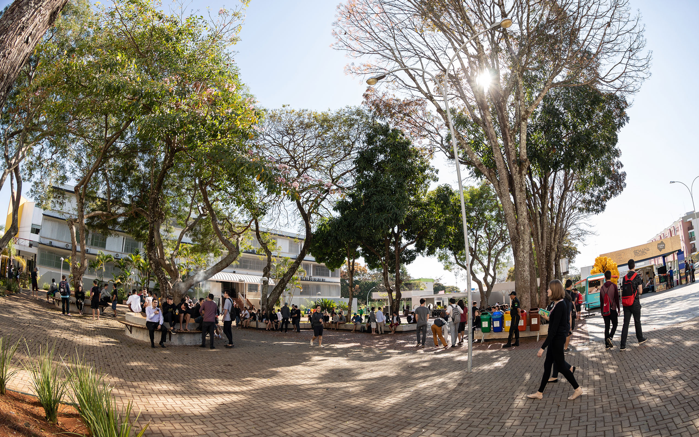

Sobre o Ensino
Temos um dos melhores ensinos superiores do Centro-Oeste. Já formamos mais de 100 mil profissionais e todos os nossos cursos possuem propostas pedagógicas modernas, que estão em constante atualização.
Nosso corpo docente é composto por mestres, doutores e profissionais de renome. Contamos, ainda, com uma infraestrutura de qualidade, onde nossos alunos têm acesso a laboratórios equipados com o que há de mais atual no mercado.
Além disso, oferecemos atendimento comunitário em um prédio de 14 andares exclusivamente dedicado à prática profissional dos nossos alunos. Tudo isso nos torna uma instituição de ensino inovadora, com padrão de qualidade de ensino reconhecido em todo o país.